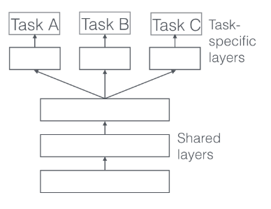

<div class="col col-7">
    <ul>
        <li> greatly reduces the risk of overfitting </li>
        <li>$P(overfitting)$ order N smaller than one task.</li>
    </ul>

</div>


<div class="col col-5">
    
</div>
